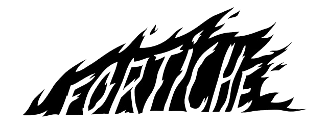
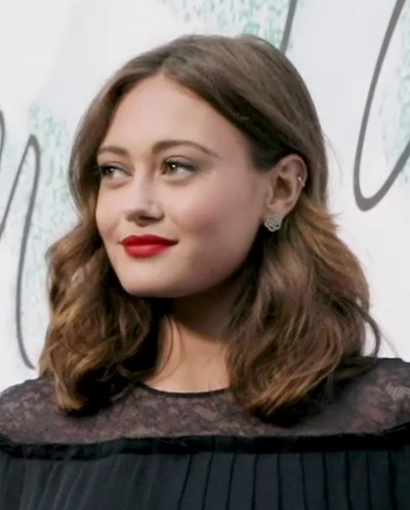
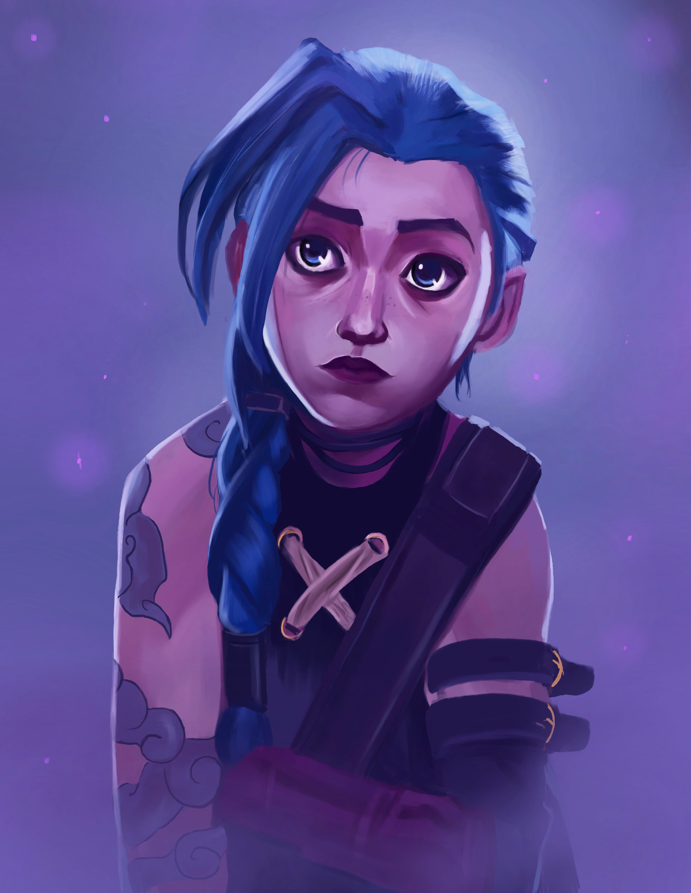
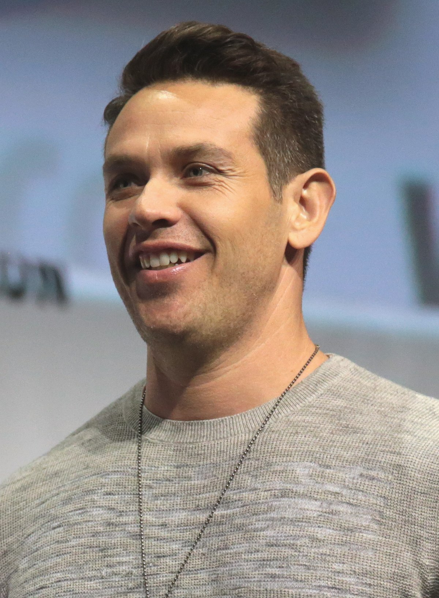
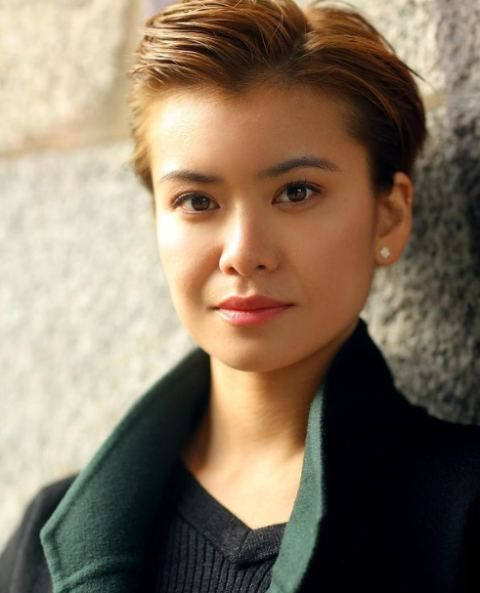

Fortiche Production est un studio d'animation français fondé en 2009, reconnu pour son travail sur des projets visuellement impressionnants. Il est notamment célèbre pour sa collaboration avec Riot Games sur la série animée "Arcane", basée sur League of Legends. Le studio se distingue par sa capacité à fusionner animation 2D et 3D, créant des œuvres au style unique et cinématographique. Fortiche est aussi impliqué dans des publicités, des clips musicaux et d'autres projets ambitieux, consolidant sa réputation internationale dans l'industrie de l'animation.
LES VOIX ORIGINALES
ELLA PURNELL

JINX

KEVIN ALEJANDRO

JAYCE

KATIE LEUNG

CAITLYN